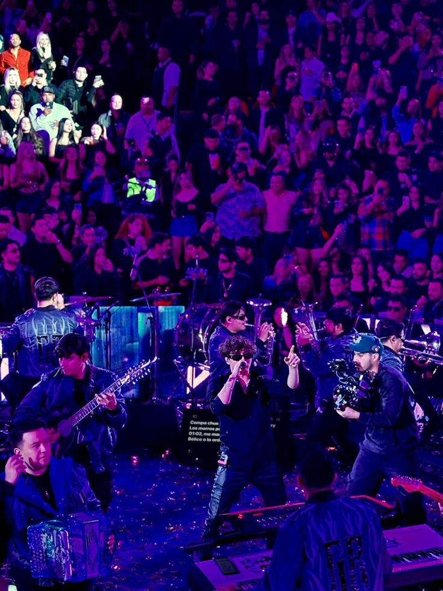
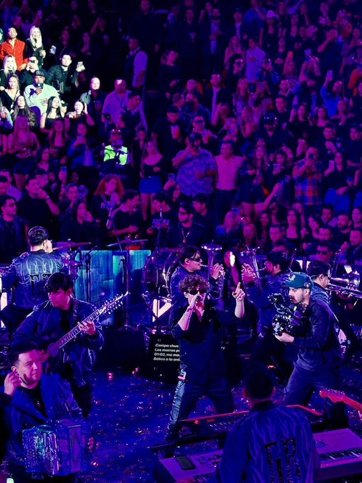

Información sobre Gabito Ballesteros
Gabito Ballesteros es un joven artista originario de Sonora, México, que ha destacado en el mundo de los corridos tumbados. Con su estilo relajado, letras pegajosas y colaboraciones con grandes exponentes del género como Natanael Cano, Peso Pluma y Junior H, ha logrado conectar con una nueva generación de oyentes que buscan un sonido fresco y auténtico.

Álbumes destacados
- Del Barrio Hasta Aquí (2021)
- Corridos y Relax (2022)
- Éxitos Tumbados (2023)
Éxitos populares
- LOV3
- El Tsurito (ft. Peso Pluma)
- Aquí Seguimos
Colaboraciones importantes
- Peso Pluma
- Natanael Cano
- Junior H
- Fuerza Regida
Estilo musical
Gabito fusiona los sonidos sierreños con toques de trap y reggaetón suave. Sus canciones son melódicas, con guitarras limpias y voces suaves, lo que lo diferencia dentro del movimiento tumbado como una propuesta más sentimental y relajada.
Trayectoria
Comenzó su carrera grabando desde casa y compartiendo su música en plataformas digitales. En poco tiempo, captó la atención de productores importantes y artistas establecidos. Gracias a su talento, ha logrado presentarse en escenarios importantes y entrar en listas de popularidad en Spotify y YouTube.
Impacto en redes sociales
Gabito se ha consolidado como una figura influyente entre jóvenes, con millones de seguidores y streams. En TikTok, sus canciones suelen volverse virales gracias a su letra emocional y estilo chill. Es un artista cercano con sus fans y muy activo en Instagram.
Frases conocidas
- "Soy de los que hacen ruido con estilo bajito."
- "Relajado pero firme, así ando por la vida."
Discografía extendida
- Del Barrio Hasta Aquí (2021)
- Corridos y Relax (2022)
- Éxitos Tumbados (2023)
- Reflexiones Tumbadas (2024)
Galería
 

Proyectos futuros
Gabito planea lanzar un nuevo álbum colaborativo en 2025 y expandirse a escenarios internacionales. También se rumorea una gira junto a Junior H y Peso Pluma que recorrerá México, Estados Unidos y Latinoamérica.